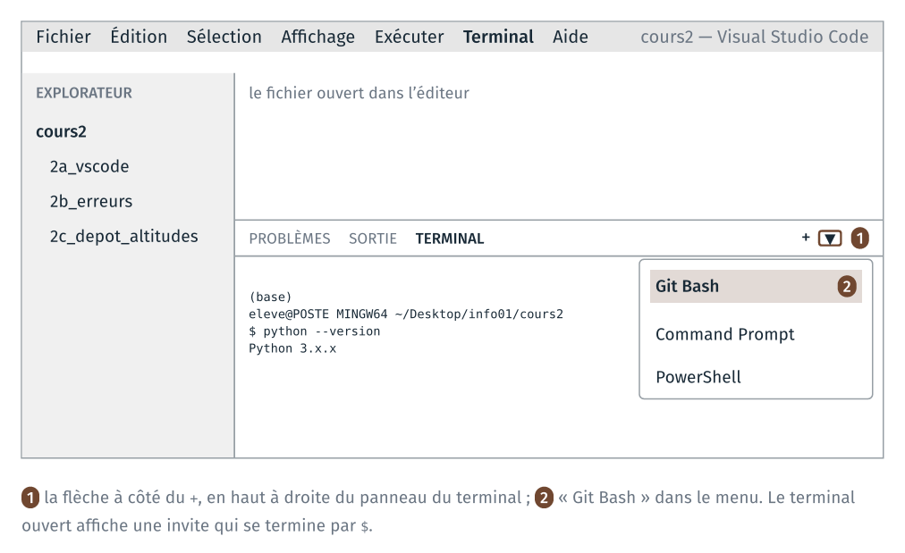

TD 2a — Configurer VS Code#
Note
Les fichiers des TD de la séance sont dans l’archive info01-cours2.zip.
Le TD configure l’éditeur de code du module, VS Code, pour le reste de l’année. Il se fait en classe entière : l’enseignant projette chaque étape, chacun la fait sur son poste, et la salle passe à l’étape suivante quand tout le monde a fini. Il dure vingt-cinq minutes. Le guide peut se lire avant la séance, et le TD se commencer seul.
La configuration se fait une fois par poste. Elle reste pour les séances suivantes : les postes de la salle gardent les réglages d’une séance à l’autre.
Configuration de VS Code : étapes#
VS Code n’est lié à aucun langage, et ne contient ni interpréteur ni compilateur. Il faut le configurer pour chaque langage employé, et lui désigner son terminal.
Configurer un langage, ici Python :
Installer l’extension du langage, avec une connexion internet : « Python », de Microsoft.
Indiquer le chemin de l’interpréteur ou du compilateur : le
python.exed’Anaconda.Lancer un programme pour vérifier :
altitudes.py.
Configurer le terminal, ici Git Bash :
Installer le terminal sur le poste : Git for Windows est déjà installé.
Le choisir comme terminal de VS Code.
Y activer conda, pour que
pythonlance le Python d’Anaconda :conda init bash, une fois par poste, au TD 1c.Vérifier :
(base)au-dessus de l’invite, puiswhich python.
Les sections du guide portent les numéros de ces deux listes, comme les diapositives du TD : « Python, étape 2 » est l’étape 2 de la première liste.
Les étapes du TD#
Étape |
Objectif |
Action |
|---|---|---|
récupérer les fichiers de la séance en ligne de commande |
copier et décompresser les fichiers de la séance, dans Git Bash |
|
ouvrir un projet dans l’IDE, et lui donner le langage du projet |
ouvrir le dossier |
|
choisir le Python qui exécute le code |
choisir l’interpréteur Python |
|
utiliser le terminal du cours 1 dans l’IDE |
faire de Git Bash le terminal de VS Code |
|
vérifier que ce terminal active conda |
lire l’invite, puis taper |
|
vérifier les deux |
lancer un programme |
|
régler l’IDE, et lire où ses réglages sont écrits |
modifier trois réglages, puis ouvrir leur fichier, |
Chaque étape se termine par un test. Une étape dont le test échoue se reprend avant de passer à la suivante.
Préparation de la séance#
Objectif : copier l’archive de la séance,
info01-cours2.zip, dans le dossierinfo01du Bureau, puis l’extraire dans Git Bash.
Copie de l’archive#
Comme au cours 1 : sur le Bureau, ouvrir le raccourci formationTemp,
copier info01-cours2.zip, et le coller dans le dossier info01 du
Bureau, à côté de cours1. Ne pas travailler dans formationTemp, dossier
du serveur commun à toute la promotion.
Décompression dans Git Bash#
Ouvrir Git Bash (menu Démarrer, « Git Bash »), puis :
cd ~/Desktop/info01
ls
ls affiche cours1/ et info01-cours2.zip. Puis :
unzip info01-cours2.zip
unzip affiche une ligne par fichier extrait (creating: pour un dossier,
inflating: pour un fichier).
Test :
ls cours2
affiche les trois dossiers des TD, 2a_vscode/, 2b_erreurs/ et
2c_depot_altitudes/, avec le README.md de l’archive et le PDF des
diapositives.
Si unzip affiche command not found, décompresser à la souris : clic
droit sur l’archive, « Extraire tout… », en effaçant la fin du dossier
proposé pour garder Desktop\info01.
Python, étape 1 : extension#
Objectif : ouvrir le dossier
2a_vscodedans VS Code, afficheraltitudes.py, puis installer l’extension « Python », de Microsoft.
Ouverture du dossier du TD#
Menu Démarrer, taper « Visual Studio Code », Entrée. La page d’accueil de VS Code s’ouvre.
Menu File, Open Folder… Dans la fenêtre, aller dans le Bureau, puis
info01, puiscours2, cliquer une fois sur2a_vscode, et « Sélectionner un dossier ».Une fenêtre demande si l’on fait confiance aux auteurs des fichiers du dossier : répondre « Yes, I trust the authors ». Sans cette réponse, VS Code ouvre le dossier en mode restreint, et les extensions n’y fonctionnent pas.
La fenêtre a trois zones : l’explorateur à gauche (Ctrl + Maj + E),
le fichier ouvert au centre, le terminal en bas (menu Terminal, New
Terminal). Le dossier ouvert est le projet : l’explorateur montre ses
fichiers, la recherche s’y fait, et le terminal s’y ouvre. Chaque TD du
module a son propre dossier.
VS Code s’affiche en anglais. Le guide donne les intitulés anglais.
Test : l’explorateur affiche 2A_VSCODE en haut de l’arborescence, et
altitudes.py dessous.
Programme avant l’installation#
Dans l’explorateur, cliquer sur altitudes.py. Le programme du cours 1
s’ouvre au centre.
Noter si le texte est coloré, alors qu’aucune extension Python n’est encore installée. La fin du guide l’explique, dans L’éditeur, le langage, l’interpréteur.
Installation de l’extension#
Ouvrir le panneau Extensions :
Ctrl+Maj+X, ou le bouton à quatre carrés dans la barre de gauche.Dans la zone de recherche en haut du panneau, taper
python. Une liste d’extensions s’affiche.Choisir l’extension « Python », publiée par Microsoft : le nom de l’éditeur est écrit sous celui de l’extension, avec une coche bleue.
Cliquer sur Install, et attendre la fin de l’installation.

Le panneau Extensions après avoir tapé python. L’extension y est déjà installée,
d’où les boutons Disable et Uninstall à la place d’Install. Capture de la
documentation de VS Code, CC BY 3.0 US.
Plusieurs extensions s’appellent « Python », et certaines ne viennent pas de
Microsoft : lire le nom de l’éditeur avant d’installer. Sur la page de
l’extension, la ligne « Identifier » donne ms-python.python.
L’installation télécharge l’extension depuis un serveur. Sans réseau, le panneau reste vide ou l’installation ne finit pas : vérifier que la session réseau est ouverte, puis recommencer. Une extension installée le reste pour les séances suivantes.
Test : l’extension « Python » est dans la section « Installed » du panneau.
Python, étape 2 : chemin de l’interpréteur#
Objectif : désigner à l’extension le Python d’Anaconda,
C:\ProgramData\anaconda3\python.exe.
Python, étape 2 : interpréteur#
Garder
altitudes.pyouvert au centre.Palette (
Ctrl+Maj+P), taper « Python: Select Interpreter », puis Entrée.Une liste apparaît, avec pour chaque Python trouvé sur le poste son nom, son chemin et son type. Choisir la ligne
base, de type Conda, dont le chemin contientanaconda3: sur les postes de la salle,C:\ProgramData\anaconda3\python.exe. Lire le chemin, et pas seulement le nom.

La liste « Python: Select Interpreter », sur un autre poste : base y est dans
miniconda3, et le cadre rouge marque le Python déjà choisi. Capture de la
documentation de VS Code, CC BY 3.0 US.
Le nom de l’interpréteur choisi s’affiche en bas à droite de la fenêtre, et VS Code le retient pour ce dossier. Pour les dossiers ouverts ensuite, un réglage de la section Réglages de VS Code : interface et fichier désigne l’interpréteur par défaut.
Test : la barre d’état, en bas à droite de la fenêtre, affiche
3.x ('base'). Si la ligne base manque dans la liste : Python, étape 2 :
dépannage.
Python, étape 2 : dépannage#
Si la liste ne contient ni base ni aucun chemin avec anaconda3 :
Dans la même liste, choisir « Enter interpreter path… ».
Coller le chemin
C:\ProgramData\anaconda3\python.exe, puis appuyer sur Entrée. « Find… » n’affiche pasC:\ProgramData, un dossier masqué.
Si la liste reste incomplète :
Cas |
Action |
|---|---|
un environnement manque, ou n’existe plus |
lancer « Python: Clear Cache and Reload Window » depuis la palette |
|
donner au réglage User |
Les autres cas sont dans les annexes, « Problèmes avec VS Code », V6.
Test : la barre d’état, en bas à droite de la fenêtre, affiche
3.x ('base').
Terminal, étape 2 : Git Bash#
Objectif : faire ouvrir Git Bash par VS Code, à la place de PowerShell.
Choix du terminal par défaut#
Palette de commandes :
Ctrl+Maj+P. Une zone de saisie s’ouvre en haut de la fenêtre.Taper
default profile, puis choisir « Terminal: Select Default Profile ».Dans la liste (Command Prompt, Git Bash, PowerShell…), choisir « Git Bash ».
La palette de commandes donne accès à toutes les commandes de VS Code par leur nom, sans passer par les menus. Le module s’en sert souvent.
Ouverture d’un terminal#
Menu Terminal, New Terminal. Le terminal s’ouvre en bas, dans le dossier
2a_vscode.Cliquer sur la flèche à droite du
+, en haut à droite du panneau du terminal. Elle liste les terminaux, et ouvre aussi un terminal d’un autre type. Elle n’apparaît qu’une fois le panneau ouvert.

Test : l’invite du terminal contient
MINGW64 ~/Desktop/info01/cours2/2a_vscode. Si elle commence par PS :
Git Bash : problèmes fréquents.
Terminal, étapes 3 et 4 : conda et vérification#
Objectif : vérifier que le terminal de VS Code active conda, et lance le Python d’Anaconda.
Test : l’invite du terminal est
(base)
eleve@POSTE MINGW64 ~/Desktop/info01/cours2/2a_vscode
$
(le nom du poste change d’une machine à l’autre). Puis :
which python
affiche /c/ProgramData/anaconda3/python, le fichier d’Anaconda.
Sans conda activé, python lance un autre Python que celui d’Anaconda, ou
aucun. Le réglage de conda, fait au TD 1c, reste d’une séance à l’autre sur le
même poste. Si (base) manque : Git Bash : problèmes
fréquents.
Git Bash : problèmes fréquents#
« Git Bash » n’est pas dans la liste. Fermer VS Code et le relancer ; VS Code cherche les terminaux au démarrage. S’il reste absent, git n’est pas installé à l’emplacement habituel (
C:\Program Files\Git) : prévenir l’enseignant.Le terminal ouvert est PowerShell (l’invite commence par
PS). Le terminal a été ouvert avant le réglage : le fermer (icône de corbeille, en haut à droite du panneau), puis en ouvrir un nouveau. La flèche à côté du+, en haut à droite du panneau, ouvre aussi un terminal Git Bash.Le message
activate.ps1 cannot be loaded because running scripts is disabled on this system. Même cause : le terminal est PowerShell.Pas de
(base)dans l’invite, etpythonintrouvable ou d’une autre version. conda n’est pas configuré dans Git Bash sur ce poste. Taper les deux commandes suivantes, puis fermer le terminal et en ouvrir un nouveau :source /c/ProgramData/anaconda3/etc/profile.d/conda.sh conda init bash
conda init bashécritneeds sudo, ou une fenêtre de Windows demande des droits d’administrateur. Fermer la fenêtre par « Non ». Écrire la ligne à la main, dans le seul fichier du dossier personnel, puis fermer et rouvrir le terminal :echo 'eval "$(/c/ProgramData/anaconda3/Scripts/conda.exe shell.bash hook)"' >> ~/.bash_profile
Chaque nouveau terminal affiche l’aide de
cygpath(Usage: cygpath …), puisbash: : No such file or directory. L’environnementbaseest activé quand même : le message vient d’uncygpathfourni par Anaconda, qui échoue sous Git Bash. Pour le faire disparaître, taper une fois, puis rouvrir le terminal :sed -i '1i cygpath() { /usr/bin/cygpath "$@"; }' ~/.bash_profile
La cause des messages de Git Bash est dans les annexes, « Problèmes avec git
et Git Bash » ; celle du message activate.ps1, dans « Problèmes avec
VS Code », V5.
Python, étape 3 : lancement d’un programme#
Objectif : lancer
altitudes.pyavec le bouton de VS Code.
altitudes.py étant ouvert au centre, cliquer sur le triangle « Run Python
File », en haut à droite de la zone du code.
Test : le terminal affiche la commande que le bouton a tapée, puis le résultat :
moyenne : 93.7 m
La fin du guide décrit cette commande, dans Bouton d’exécution.
Réglages de VS Code : interface et fichier#
Objectif : modifier trois réglages du compte dans l’interface de VS Code, puis retrouver ces réglages dans leur fichier.
Deux niveaux de réglages#
Les réglages de VS Code s’ouvrent par Ctrl + ,. En haut de la page,
deux onglets :
Onglet |
S’applique à |
Fichier |
|---|---|---|
User |
tous les dossiers ouverts avec ce compte, sur ce poste |
|
Workspace |
le dossier ouvert seulement |
|
Un réglage du dossier (Workspace) l’emporte sur celui du compte (User). Le fichier du dossier se copie et se versionne avec le projet ; celui du compte reste sur le poste.
Les trois réglages#
Dans l’onglet User :
Taper
render whitespacedans la zone de recherche. Le réglage « Editor: Render Whitespace » s’affiche ; choisiralldans sa liste.Taper
auto save. Pour « Files: Auto Save », choisirafterDelay.Taper
default interpreter path. Dans le champ « Python: Default Interpreter Path », taperC:\ProgramData\anaconda3\python.exe.
L’interpréteur choisi à Python, étape
2 vaut pour le dossier ouvert
seulement. Le troisième réglage fait de base l’interpréteur de tout dossier
ouvert ensuite, à commencer par celui du TD 2b. Un choix fait par « Python:
Select Interpreter » l’emporte sur ce réglage, pour son dossier.
Test : dans altitudes.py, un point gris marque chaque espace, comme
dans Notepad++ au cours 1 ; en modifiant le fichier, le point blanc de
l’onglet (fichier non enregistré) disparaît après une seconde.
Le fichier des réglages#
Palette (Ctrl + Maj + P), « Preferences: Open User Settings (JSON) ».
Le fichier du compte s’ouvre au centre.
Test : le fichier contient au moins :
{
"terminal.integrated.defaultProfile.windows": "Git Bash",
"editor.renderWhitespace": "all",
"files.autoSave": "afterDelay",
"python.defaultInterpreterPath": "C:\\ProgramData\\anaconda3\\python.exe"
}
Dans le fichier, les barres obliques inverses du chemin sont doublées. L’ordre des lignes peut différer, et d’autres lignes peuvent y être, écrites par les extensions. Ne rien modifier, et fermer le fichier.
Chaque réglage a un nom en plusieurs parties séparées par des points,
editor.renderWhitespace, et une valeur. La fin du guide compare l’onglet
des réglages et ce fichier, dans Réglages en texte.
La configuration de ce TD est enregistrée dans le compte, sur ce poste :
l’extension Python, les réglages User, et le fichier ~/.bash_profile écrit
par conda init bash au TD 1c. Sur un autre poste de l’école, il faut a priori
la refaire, de « Python, étape 1 » à ces réglages, avec conda init bash.
Solution de repli : Spyder#
Spyder, installé avec Anaconda, fonctionne sans réglage. Pour ne pas rester
bloqué, écrire et lancer les programmes dans Spyder (F5), et taper les commandes
git dans une fenêtre Git Bash à côté, comme au cours 1. Les commandes git du TD 2c
ne changent pas, et git ne dépend pas de conda. Le détail est dans les
annexes, « Spyder », section « Git avec Spyder ».
Ce que le TD fait constater#
À lire après avoir fait les étapes.
L’éditeur, le langage, l’interpréteur#
Le texte de altitudes.py est coloré avant toute installation : la
coloration des langages courants est livrée avec VS Code. L’extension Python
apporte le reste : le choix de l’interpréteur, l’exécution, la vérification
du code pendant la frappe. Elle installe avec elle « Pylance » et « Python
Debugger », visibles dans la section « Installed » du panneau Extensions.
L’interpréteur n’est pas dans VS Code : l’éditeur appelle celui d’Anaconda,
installé à part.
Terminal de VS Code#
Le terminal de VS Code est Git Bash, le terminal du cours 1, ouvert dans la
fenêtre de l’éditeur. Il lit au démarrage le fichier ~/.bash_profile
écrit par conda init bash, d’où le (base) et le python d’Anaconda.
Bouton d’exécution#
Le bouton écrit dans le terminal la commande python … altitudes.py, avec
l’interpréteur choisi à Python, étape
2. Cette commande est python,
précédé du chemin complet de l’interpréteur, suivi du chemin du fichier : la
même commande que celle tapée à la main au cours 1, avec des chemins absolus.
Si cet interpréteur et le python du terminal diffèrent, un programme peut
marcher par le bouton et échouer au terminal : le cours 5 y revient, avec les
environnements.
Réglages en texte#
L’onglet des réglages et le fichier settings.json montrent les mêmes
réglages : l’onglet écrit dans le fichier. Un réglage de dossier, dans
.vscode/settings.json, accompagne le projet quand il est copié ou versionné.